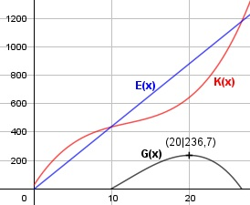

Aufgabe 73 Die Kostenfunktion eines Betriebes lautet: K(x) = (1/6)x3 - 6x2 + 84x + 30 Er erlöst 44 GE/ME. Bei welcher Produktionsmenge x erzielt er den höchsten Gewinn? G(x) = E(x) - K(x) E(x) = 44 * x GE G(x) = 44x - ((1/6)x3) - 6x2 + 84x + 30 G(x) = -(1/6)x3 + 6x2 - 40x - 30

G'(x) = - 0,5x2 + 12x - 40 G''(x) = -x + 12 A, B, C - Formel: A = -0,5, B = 12, C = -40 x1,2 = x1,2 = x1,2 = -12 ± 8 x1,2 = ---------- -1 x1 = 4 x2 = 20 G(20) = -(1/6) * 203 + 6 * 202 - 40 * 20 - 30 G(20)) = 236,7 GE G''(4) = - 4 + 12 > 0 --> Tiefpunkt G''(20) = - 20 + 12 < 0 --> Hochpunkt (20 ME|236,7 GE) Bei einer Produktionsmenge von 20 ME erzielt der Betrieb den Höchstgewinn von 236,7 GE.